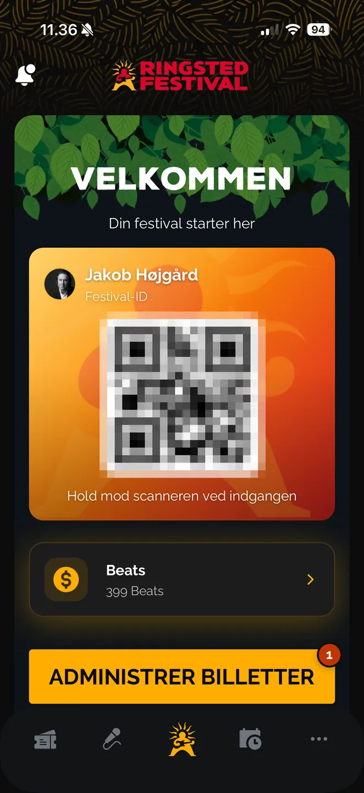
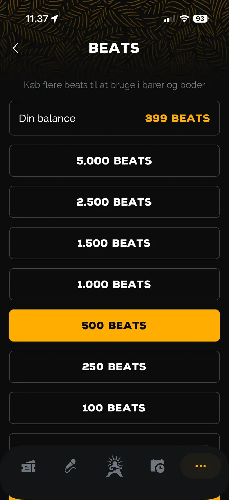
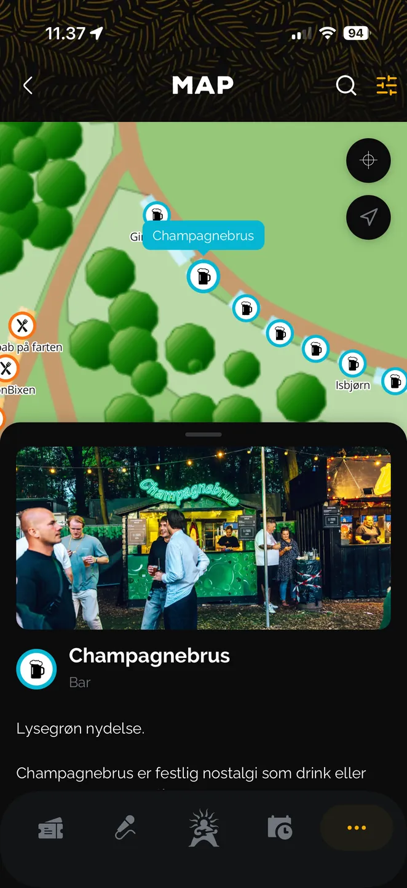

LIVECLOUD
Ringsted Festival 2026
Hele festivalen kørte på LiveCloud.
Bevist i drift
Billetter, adgang, betaling og regnskab.
Ét system.
Ikke et pilotprojekt ved siden af noget andet. Hele festivalen, fra første billet til færdig afregning.
Ringsted Festival 2026
Det, platformen leverede.
+23,6 %
Vækst i bar- og madsalg
26.000+
Gæster gennem gates
73
Barer og boder
100 %
Automatisk afstemt
Billetten
Ligger på profilen.
Ikke i en PDF.
Derfor kan en partout deles op, en enkelt dag gives videre på dagen, og billetten sælges igen inde i jeres egen app.
Køen
Under tre sekunder
pr. handel.
Ingen kort, ingen PIN, ingen rundtur gennem banken for hvert køb. Saldoen er tanket op i forvejen.
Gæstens app
Jeres app. Jeres brand.
Jeres gæster.



Adgangen
Samme enhed i baren
og ved porten.
I dag lejer festivalen to slags udstyr af to leverandører. Hos os er begge dele med i prisen.
Bagefter
Regnskabet stemte.
Post for post.
Tre dage fra sidste salg til færdig afregning, afstemt mod bank og indløser. Ubrugte Beats blev betalt tilbage automatisk.
LiveCloud
livecloud.dk
Tryk for at starte
Skærmvisningen kører derefter i loop af sig selv